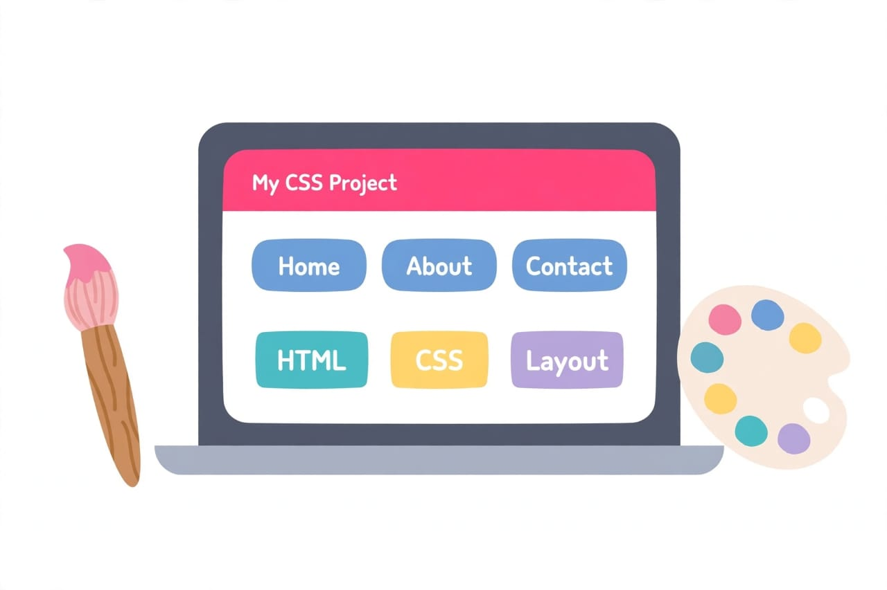

الاسم: فاطمه ياسر عبدالهادي عبدالنبي
الرقم الجامعي: 2500515
انا اخترت اتكلم عن CSS لاني كنت فاكرة تصميم المواقع صعب، بس لما الدكتورة شرحته وجربنا بنفسنا لقيته سهل وممتع. اي موقع بنشوفه متقسم لحاجتين، حاجة بتبني الصفحة وحاجة بتخلي شكلها حلو، وموضوع البحث ده عن الحاجة التانية اللي هي CSS.
CSS اختصار لـ Cascading Style Sheets، وهي اللي بنتحكم بيها في شكل الموقع. الـ HTML هو اللي بيحط العنوان والكلام والصور، والـ CSS هي اللي بتخلي الخلفية لونها احمر والكلام ابيض والعنوان كبير.
الدكتورة قالت مثال حلو، ان الـ HTML زي الطوب اللي بنبني بيه البيت، والـ CSS زي الدهان اللي بيخلي شكله حلو.
الألوان اول حاجة جربتها وحبيتها. جربت اكتب p { background-color: red; color: white; } ولقيت الخلفية بقت احمر والكلام ابيض. وكمان اتعلمت اغير الخطوط وحجم الكلام، واخلي العنوان كبير والكلام العادي صغير.
اتعلمت كمان ان التصميم مش الوان بس، التصميم كمان ترتيب ونظام، ولازم نعمل مسافات بين العناصر عشان الصفحة شكلها يبقى مظبوط.
كنت بنسى اقفل القوس، وكنت بكتب اسم اللون غلط زي read بدل red. بس اتعلمت اجرب حاجة حاجة مش كله مرة واحدة.

| الخاصية | بتعمل ايه؟ |
|---|---|
| color | لون الكلام |
| background-color | لون الخلفية |
| font-size | حجم الخط |